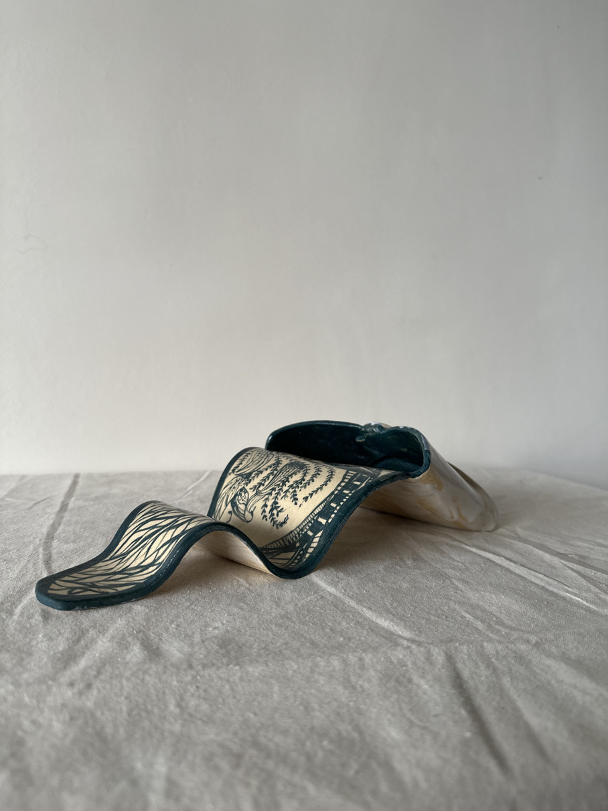

How a pandemic sparked a passion
The banyan tree,
and the woman under it.
Sakshi Borana studied commercial arts. Pottery found her during the 2021 lockdown, and it never really let go.
27 years old · Mumbai
From commercial arts
to the wheel, and back to her hands.
Sakshi trained in commercial arts, the kind of design work that lives on screens and in brand decks. Then 2021 happened. Stuck at home like everyone else, she picked up clay almost by accident, and found something screens never really gave her. A material that pushed back. Something that needed her hands and her patience in equal measure.
She gravitated toward coil building, stacking and smoothing rope like lengths of clay by hand instead of throwing on a wheel. It's slower. It doesn't forgive shortcuts. And that's exactly why every Banian piece looks the way it does. A little uneven, unmistakably handmade, one of one.
Why "Banian"
The banyan tree doesn't
grow alone.
A banyan sends roots down from its own branches until one tree slowly becomes a grove. In villages across India, it naturally becomes a meeting place, somewhere people gather to talk, trade stories and just pass the time together. That's the kind of studio Sakshi set out to build. Strength through roots, and a space where people come together to create, heal and find a bit of joy.
Chaotic elegance
Playful. Professional.
Both, on purpose.
Sakshi describes herself as chaotic and a little uneven, and she's run into people who mistake that playfulness for a lack of seriousness. It's neither. It's a philosophy. Imperfection as craft, not a compromise on it.
Community over commerce, a space to gather, not just shop.
Imperfection is the art, not a flaw to correct.
Serious craft, held with a light hand.
Pottery as meditation, and as connection.
Every piece, every session, unrepeatable.
The technique
Coil building, explained.
Instead of throwing clay on a spinning wheel, Sakshi rolls it into long ropes, or coils, and stacks them in rings, smoothing each seam into the next by hand. It's an old technique, slower and more physical than wheel throwing, and it's what allows for the asymmetric, sculptural forms that define her work. Pieces that swell, lean and fold in ways a wheel rarely allows.
It's also why no two pieces, even from the same batch, ever come out quite the same.

What's next
Interior collaborations, immersive spaces and more themed studio days.
Sakshi is building toward collaborations with interior designers, bringing coil built forms into larger, immersive spaces, alongside the workshops, custom commissions and themed pottery parties she already runs.
Get in touch about a collaboration